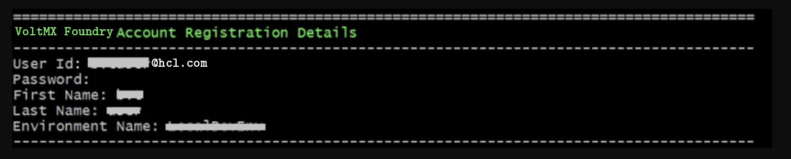

Volt MX Foundry Containers Solution On-Premises:FAQs and Troubleshooting > Salient Features
Overview - Volt MX Foundry Single Container Solution
The Volt MX Foundry Single Container On-Premises solution offers a quick way to set up Volt MX Foundry on your local environment. It leverages the following technology:
- Docker - To package different components as portable container images (with all the required binaries and libs).
Salient Features
The Volt MX Foundry Single Container Solution provides developers with tools to build applications.
The Volt MX Foundry Single Container Solution has the following features:
- Deploys Volt MX Foundry on a native Docker container.
- Supports multi-platform deployment in Windows, Linux, and macOS.
Prerequisites
-
Install
Docker Engine version 20.10.17, andDocker Compose version 1.23.2.Note:
For Windows and macOS, you can download and install the package installer forDocker Desktop version 2.5.0.1 (49550).
For Linux, you must install Docker Engine and Docker Compose separately. -
On Windows machines, use any bash/shell prompt to execute the install-foundry.sh script. macOS and Linux support Bash prompt by default. install-foundry.sh is located in
VoltFoundrySingleContainer-<version>_GA.zip, which you wil download to start the installation. See {Installation]{#installation) for details. - Install Java 11.
- Install an external Database. (The supported types are mentioned here.)
Note:
For Windows 10 Pro machines, before installing VirtualBox, make sure that Hyper-V is disabled.
Intel VT and related settings must be enabled in system BIOS.
To execute the installation scripts, you must use Bash version 4 or later.
To avoid an unknown host exception, make sure that the IP address is configured with the hostname. To do so, follow the steps that are mentioned in the FAQs section.
Software Requirements
Recommended Operating Systems
HCL recommends using the following operating systems to install Volt MX Foundry Single Container Solution:
| Operating System | Recommended Version |
|---|---|
| Microsoft Windows | Windows 10 Pro or Windows 11 Pro |
| Linux | RHEL 9.0 or Ubuntu 22.04 |
| macOS | Ventura |
Supported Application Servers
Volt Foundry Single Container Solution supports only the Tomcat Application server.
All the Docker images built for Volt MX Foundry are built using the Tomcat version 9.0.33-jdk11 as the base image.
Supported Databases
Volt Foundry Single Container Solution supports the following database servers:
| Database Type | Version Supported |
|---|---|
| MySQL | 8.0 |
| Microsoft SQL Server | 2019 |
| MySQL Database HA (active/passive) Cluster | 8.0 |
| Oracle | 19c |
Note: You must have an existing external database. Databases do not come bundled with the Installer.
Hardware Requirements
- CPU: Dual-core processor
- Memory: A minimum RAM of 8 GB is required. HCL recommends using a system with 16 GB RAM.
Architecture
For flyway migrations, a container with database image (voltmx-foundry-db) is created. The database image is terminated after all the migrations are completed.
After the migrations are completed, the second container will run the Volt MX Foundry Docker single image(voltmx-foundry-all). This container keeps running in the background for as long as the Volt MX Foundry setup is required.
Following are the two containers present in the Volt Foundry Single Container Solution:
- Volt MX Foundry
- Database (exists on completion of the Database scripts execution)
The following is the list of Docker images used in the Volt Foundry Single Container Solution:
- Foundry (Contains
mfconsole.war,workspace.war,accounts.war,apiportal.war,authService.war,admin.war,services.war,middleware.war,apps.war, andvpns.war) - Database (Contains database migration scripts)
The docker images will be pulled when you execute the installation scripts in the "HCL Volt MX Foundry Container Installer" found on HCL's FNO download website: https://hclsoftware.flexnetoperations.com/flexnet/operationsportal/entitledDownloadFile.action?downloadPkgId=HCL_Volt_Foundry_v9.5_Latest&orgId=HCL
To pull the images, use the below command.
docker pull https://hclcr.io/harbor/projects/47/repositories/voltmx-foundry-all:
Volt Foundry Single Container Solution downloadable bundle contains the following directories and files.
- install-foundry.sh - Installation script
- install-actions.sh - Installation actions script
- templates - Directory containing the config template files
- config.properties - Properties file to pass the inputs to install-foundry.sh instead of giving inputs in shell prompts.
- lib - Folder containing the foundry-utils.jar file.
- foundry- Folder containing the docker-compose.yml file.
- flyway- Folder containing the docker-compose.yml file.
Installation Types
- Command Line or GUI Installation - Volt MX Foundry Single Container Solution can be installed using the bundled install shell script, which will prompt the user for the required values.
- Silent Installation - The installation script also supports silent installation if the config.properties file is passed as an argument (for example, /path/install-foundry.sh config.properties). Using this, you can have additional ability to pass custom Tomcat JAVA_OPTS, and time-zone settings as well.
Configuration
The following parameters must be provided by the user during Installation:
-
Install Environment Name - The install environment name can be anything, for example,
dev,qa,prod, oreastusprod.Note: The Install Environment Name must not contain numbers.
-
Application Server Details:
-
Domain Name: The Domain Name for Volt MX Foundry.
Note: Domain name must not be a dynamic IP address or 'localhost'. Although, the domain name can be a static IP address.
-
Server Port - The Port Number for Volt MX Foundry.
Note: Ensure that the specified port is not being used by another service.
-
COM_PROTOCOL: The communication protocol that is used for Volt MX Foundry. This value can be either http or https.
-
KEYSTORE_FILE : The path to the existing Keystore file. The path should point to a valid
JKSfile. This value can be empty if the communication protocol is HTTP. -
KEYSTORE_FILE_PASS: Password for the Keystore (
JKS) file. This value can be empty if the communication protocol is HTTP.
-
-
Database Details:
-
Database Type - This is the Database Type you want to use for hosting Volt MX Foundry.
-
IS_MYSQL_CONTAINER_REQUIRED This value can be true/false
Note: When the value is true, MYSQL 8.0.31 will come with Foundry Scripts Please note that the DB_HOST, DB_PORT and DB_USER will be defaulted for MySQL Container and need not be entered
-
Database Hostname - This is the Database Server hostname used to connect to the Database Server.
-
Database Port Number– This is the Port Number used to connect to the Database Server.
-
Database Username - This is the preferred Database Username used to connect to the Database Server.
-
Database Password - This is the Database Password used to connect to the Database Server.
Note: The Password must be a string containing at least 8 characters, and must include at least one uppercase letter, one lowercase letter, one digit and one special character.
-
Database Password Secret Key - This is the decryption key for the database password, which is required only if you are using an encrypted password.
IMPORTANT: If you are using an encrypted password, use the values that you receive from the encryption utility. For more information, refer to Encrypting the Database Password.
-
Database Prefix – This is the Database server prefix for Volt MX Foundry Schemas/Databases.
-
Database Suffix – This is the Database server suffix for Volt MX Foundry Schemas/Databases.
Note: In case of upgrade, ensure that the values of the Database Prefix and Suffix that you provide are the same as you had provided during the initial installation.
-
-
Automatic Registration Details (not applicable for upgrade):
- User Id – E-mail ID used for Volt MX Foundry Registration.
- Password – Password used for Volt MX Foundry Registration.
- First Name – First Name used for Volt MX Foundry Registration.
- Last Name – Last Name used for Volt MX Foundry Registration.
- Environment Name – The Volt MX Foundry Environment to publish generated applications.
-
Time Zone - The Time Zone of the Database used for Volt MX Foundry installation.
Note: The Time Zone is an optional value. If you do not provide any Time Zone, it is set to Etc/UTC.
Installation
Run the Volt MX Foundry Single Container install script to generate and deploy Volt MX Foundry containers.
Steps to Install Volt MX Foundry Single Container Solution on On-Premises:
-
Download the
voltmx-foundry-containers-onprem_<version>_GA.zipfrom downloads and extract it. The file structure will be as shown below:config.properties install-foundry.sh* install-actions.sh* lib/ templates/ foundry/ flyway/ -
Run the
install-foundry.shfile.
Note: You must provide execute permissions to run the
install-foundry.shandinstall-actions.shfiles on Linux and macOS.
-
Enter the Install Environment Name and Domain Name.

Note: Domain name cannot be a dynamic IP address or 'localhost'. Although, the domain name can be a static IP address.
-
For the Database details:
- In case of new Install, provide the following details.

- In case you are upgrading using an existing database, you must additionally provide the Previous install artifact directory which is the location of your existing Volt MX Foundry instance.
Note:
Ensure that the database details you provide point to an existing database instance.
In case of upgrade, ensure that the database points to the existing instance of the database running Volt MX Foundry.
Database Hostname cannot be localhost.
If the Database Prefix or Suffix contain numeric characters, enclose the values in single quotes (' ').
* In case of upgrade, ensure that the values of the Database Prefix and Suffix that you provide are the same as you had provided during the initial installation.
-
Enter the Administration Account Configuration details as shown:
Note: This step is not applicable for upgrades. You can use the credentials that you used to create the initial account.

Note: The Password must contain at least 8 characters, at most 20 characters and must include at least one uppercase letter, one lowercase letter, one digit and one special character.
-
Enter the Time Zone of your Database as shown:

Note: The Time Zone is an optional value. If you do not provide any Time Zone, it is set to Etc/UTC.
Once all the input parameters are given, the installation procedure starts.


Note: Auto Registration will not occur during upgrade.
After successful completion of execution, the Volt MX Foundry URLs are displayed on the screen.

Limitations
Volt Foundry Single Container Solution has the following limitations:
- Support for SPA / Desktop Web is only available for zipped SPA apps, but not for WARs.
- Log Analytics is currently not supported.
FAQs and Troubleshooting
-
Do I need to have an account with the HCL Harbor to pull the Volt MX Foundry Images?
No. The images are public, and you do not need any authorization to download them.
-
How should I restart a container that has been killed?
To restart a container you must do the following:
- Go to Downloads (The folder you downloaded and extracted it to) >
VoltMXFoundrySingleContainer-9.x.x.x-GA/foundry/folder. - Run the command:
docker-compose up -d. -
How to configure the IP address as the hostname to avoid an unknown host exception?
-
Update the hostname and IP in the hosts file.
- For Linux:
“/etc/hosts” - For Windows 10 and 8:
“c:\Windows\System32\Drivers\etc\hosts” - For macOS:
/private/etc/hosts - Once the file is updated with
SPACE , save and close the file.
Note: In case you still face an issue with the hostname resolution, you must flush the DNS cache.
- For Linux:
-
Update
docker-compose.ymlfile underDownloads/VoltMXFoundrySingleContainer-9.x.x.x-GA/foundry/-
Add a section under restart key in the following order:
extra_hosts:
\- "<HOSTNAME>:<IP>"
Once updated, the file will look like the following image:
-
- Go to Downloads (The folder you downloaded and extracted it to) >
Extracting Logs from your Application
To perform any actions related to the logs of your application, you need the names or IDs of the containers in the application.
At a bash or CMD prompt, run "docker ps" to get the list of currently running containers. You can then use docker logs -f <CONTAINER ID> or docker logs -f <CONTAINER_NAME> to get the logs of the desired pod. Please refer to the official Docker documentation for more logging options for the container.
If you want to teletype (tty) into the container, execute one of the following commands from your terminal:
- For Windows:
winpty docker exec -it <container_name> bashorwinpty docker exec -it <container_id> bash - For macOS/Linux:
docker exec -it <container_name> bashordocker exec -it <container_id> bash
Note: A database container terminated after the flyway migrations are complete. As a result, you cannot tty into the database container post installation.
If you want to copy logs (for example: Component logs) from the Foundry container to your local machine, execute one of the following commands from your terminal:
docker cp <container_name>:<location_in_container> <location_in_machine>
docker cp <container_id>:<location_in_container> <location_in_machine>
docker cp <container_id>:<location_in_container> <location_in_machine>
For example: To copy authService logs, execute the following command from your terminal:
docker cp foundry_tomcat_1:/usr/local/logs/authService.log /d/Foundry/logs
Note: Component logs can be found at
/usr/local/logsinside the container.
Configuring Iris to connect to Volt MX Foundry
For details on configuring Iris to connect to Volt Foundry, refer to Connect to Volt Foundry in the Iris User Guide.